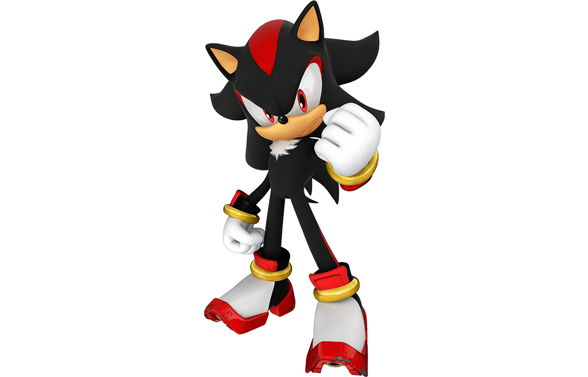

Sonic the Hedgehog (ソニック・ザ・ヘッジホッグ Sonikku za Hejjihoggu?, lit. "Sonic el Erizo"; nacido el 23 de junio), es el protagonista principal de la saga de videojuegos del mismo nombre y la mascota de Sega. Él es un erizo antropomórfico nacido con la habilidad de correr más rápido que el sonido, de allí su nombre. Su mejor amigo es Tails
Miles Prower (マイルズ・プラウアー, lit. Mairuzu Purauā), mejor conocido por su apodo "Tails" (テイルス, lit. Teirusu) Es un pequeño zorro antropomórfico de dos colas, gracias a las cuales, tiene la capacidad de volar (debido al giro rápido de éstas), y de nadar. Gracias a su habilidad de volar y su considerable velocidad, se convirtió en el compañero de aventuras de Sonic the Hedgehog, quien es su mejor amigo.
Knuckles the Echidna (ナックルズ· ·ザエキドゥナ, Nakkurusu za Ekiduna (Knuckles El Equidna en España) ) es un personaje de la saga de videojuegos Sonic the Hedgehog. Es un equidna rojo antropomórfico de 16 años de edad, que es a la vez poderoso físicamente y muy resistente.
Amy Rose (エミー・ローズ, Emī Rōzu?) es un personaje ficticio de la saga Sonic the Hedgehog. Es una erizo antropomórfico de doce años que está perdidamente enamorada de Sonic the Hedgehog. Desde que él la salvó en Little Planet de las garras de Metal Sonic, Amy ha hecho todo lo posible para ganar su corazón, ella suele perseguirlo y autoproclamarse su novia. Amy posee un poderoso martillo llamado Martillo Piko Piko, el cual suele llevar a todas partes.

Shadow the Hedgehog (シャドウ・ザ・ヘッジホッグ, Shadō za Hejjihoggu?, lit. "Sombra, el Erizo") es un personaje ficticio de la saga Sonic the Hedgehog; un ser hibrido creado con base de un erizo/Black Arms antropomórfico negro. Él es el archirrival de Sonic y su misma antítesis en todos los aspectos de su vida.

Rouge the Bat (ルージュ·ザ·バットRuju za Batto) es un personaje recurrente de la serie Sonic the Hedgehog. Rouge es una ladrona de joyas, agente del gobierno a tiempo parcial en G.U.N. y es una auto-proclamada cazadora de tesoros que planea tener todas las gemas y tesoros del mundo en su posesión. Sus actuales obsesiones son la Master Emerald y las Chaos Emeralds. Ella hizo su primera aparición en Sonic Adventure 2.